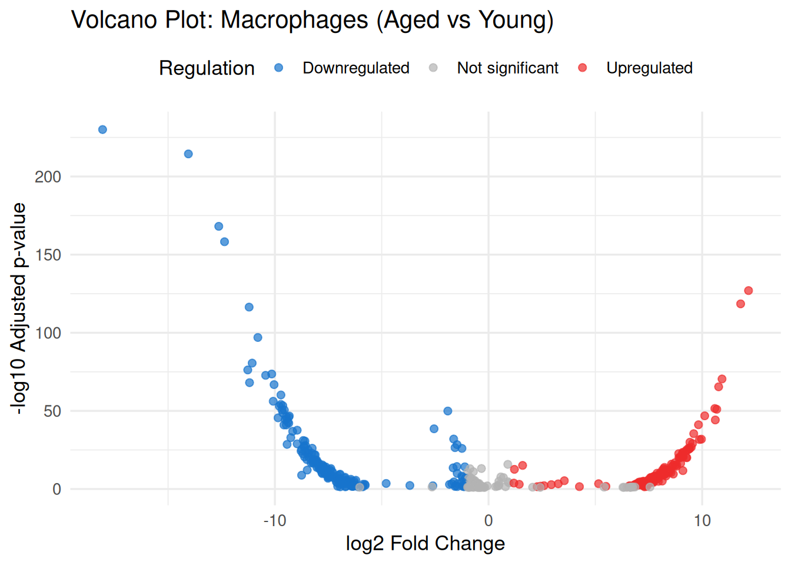
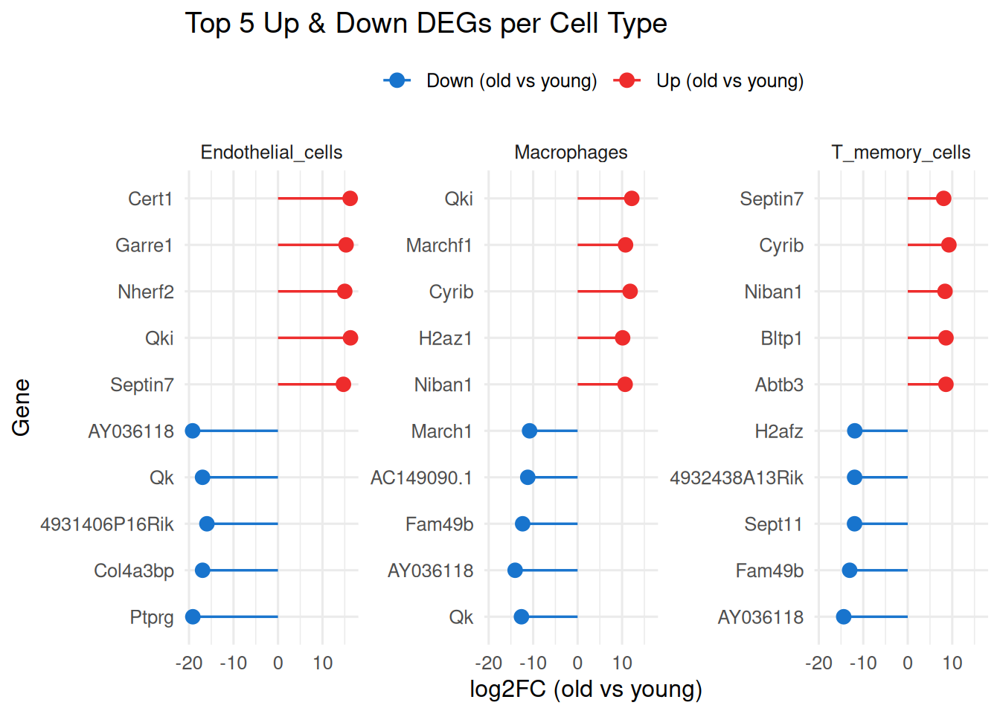
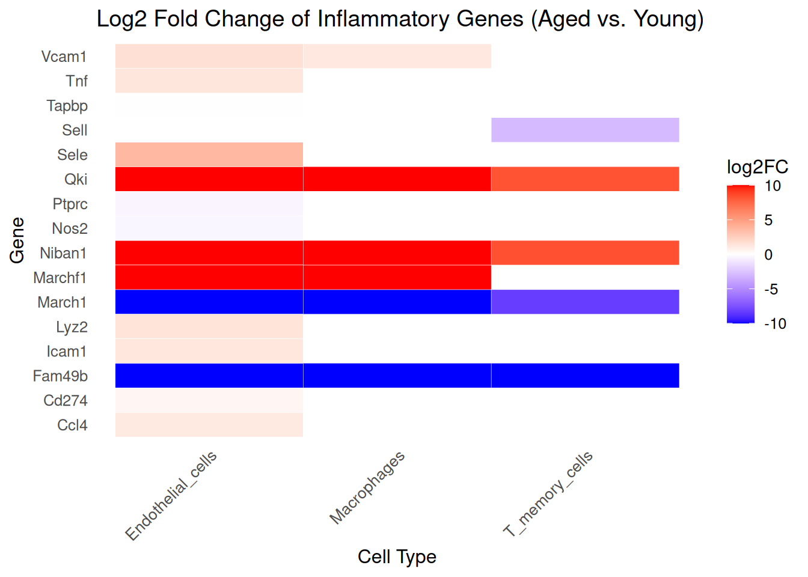

# Read data file
library(readxl)
DEG_data <- read_excel("DEG_All_Condition_All_CellType 1.xlsx", sheet = 1)Exploring Age-Related Immune–Vascular Changes in the Brain Using Single-Cell RNA-seq
Introduction
The brain, once thought to be immune privileged, is now recognized as a dynamic immune environment with a diverse array of resident and infiltrating immune cells. Microglia, the brain’s resident macrophages, are central to maintaining homeostasis, while border-associated immune populations—including perivascular macrophages, meningeal dendritic cells, and infiltrating T cells—play critical roles in surveillance and neuroimmune interactions.
Dataset Overview
For my final project, I analyzed single-cell RNA-seq data generated by our lab from young and aged mouse brains. The dataset includes ~20,000 cells per age group, derived from whole-brain single-cell suspensions sorted for live cells and sequenced using the 10x Genomics platform.After sequencing, the data underwent standard quality control (QC) and preprocessing using the Seurat package in R. This included filtering low-quality cells, normalizing gene expression, identifying highly variable genes, and clustering cell populations.This analysis focuses on endothelial cells, macrophages , and T cells— some of the key populations at the brain’s immune–vascular interface. By comparing age-related changes in the expression of adhesion molecules (e.g., ICAM1, VCAM1) and inflammatory mediators (e.g., CXCL10), the project aims to uncover how aging alters immune signaling and vascular function.
# Load necessary packages
library(tidyverse)
library(dplyr)
library(ggplot2)
library(tidyr)
library(forcats)
library(knitr)#look at the data
head (DEG_data)# A tibble: 6 × 9
gene_symbol p_val avg_log2FC pct.1 pct.2 p_val_adj Cluster ident.1 ident.2
<chr> <dbl> <dbl> <dbl> <dbl> <dbl> <chr> <chr> <chr>
1 Gm42418 0 -22.2 0 1 0 Endoth… G2_old G1_you…
2 ENSMUSG0000012… 0 18.7 0.977 0 0 Endoth… G2_old G1_you…
3 AY036118 0 -19.2 0 0.962 0 Endoth… G2_old G1_you…
4 Ptprg 0 -19.1 0 0.957 0 Endoth… G2_old G1_you…
5 Qk 0 -17.0 0 0.857 0 Endoth… G2_old G1_you…
6 Col4a3bp 0 -17.0 0 0.819 0 Endoth… G2_old G1_you…# Count number of entries per cell type (Cluster column)
all_cell_counts <- DEG_data %>%
group_by(Cluster) %>%
summarise(Count = n()) %>%
arrange(desc(Count))
# Overview bar plot
ggplot(all_cell_counts, aes(x = reorder(Cluster, -Count), y = Count, fill = Cluster)) +
geom_bar(stat = "identity") +
labs(title = "Overview of All Cell Types in DEG Dataset",
x = "Cell Type", y = "Number of Entries") +
theme_minimal() +
theme(axis.text.x = element_text(angle = 45, hjust = 1),
legend.position = "none")# Define cell types I want to keep
cell_types <- c("Endothelial_cells", "Macrophages", "T_memory_cells")
# Filter the DEG dataset to keep only these 3 cell types
filtered_deg <- DEG_data %>%
filter(Cluster %in% cell_types)
# only young vs. aged
young_vs_aged <- filtered_deg %>%
filter(ident.1 == "G2_old", ident.2 == "G1_young")
table(young_vs_aged$Cluster)
Endothelial_cells Macrophages T_memory_cells
10813 477 524 # Filter for endothelial cells aged vs young
endo_deg <- DEG_data %>%
filter(Cluster == "Endothelial_cells",
ident.1 == "G2_old", ident.2 == "G1_young") %>%
mutate(log10_pval = -log10(p_val_adj),
regulation = case_when(
p_val_adj < 0.05 & avg_log2FC > 1 ~ "Upregulated",
p_val_adj < 0.05 & avg_log2FC < -1 ~ "Downregulated",
TRUE ~ "Not significant"
))
# Plot
ggplot(endo_deg, aes(x = avg_log2FC, y = log10_pval)) +
geom_point(aes(color = regulation), alpha = 0.7, size = 2) +
scale_color_manual(values = c(
"Upregulated" = "firebrick2",
"Downregulated" = "dodgerblue3",
"Not significant" = "grey70"
)) +
geom_vline(xintercept = c(-1, 1), linetype = "dashed", color = "gray50") +
geom_hline(yintercept = -log10(0.05), linetype = "dashed", color = "gray50") +
labs(title = "Volcano Plot: Endothelial Cells (Aged vs Young)",
x = "log2 Fold Change",
y = "-log10 Adjusted p-value",
color = "Regulation") +
theme_minimal(base_size = 13) +
theme(legend.position = "top")
# Filter for macrophages aged vs young
macrophage_deg <- DEG_data %>%
filter(Cluster == "Macrophages",
ident.1 == "G2_old", ident.2 == "G1_young") %>%
mutate(log10_pval = -log10(p_val_adj),
regulation = case_when(
p_val_adj < 0.05 & avg_log2FC > 1 ~ "Upregulated",
p_val_adj < 0.05 & avg_log2FC < -1 ~ "Downregulated",
TRUE ~ "Not significant"
))
# Plot
ggplot(macrophage_deg, aes(x = avg_log2FC, y = log10_pval)) +
geom_point(aes(color = regulation), alpha = 0.7, size = 2) +
scale_color_manual(values = c(
"Upregulated" = "firebrick2",
"Downregulated" = "dodgerblue3",
"Not significant" = "grey70"
)) +
geom_vline(xintercept = c(-1, 1), linetype = "dashed", color = "gray50") +
geom_hline(yintercept = -log10(0.05), linetype = "dashed", color = "gray50") +
labs(title = "Volcano Plot: Macrophages (Aged vs Young)",
x = "log2 Fold Change",
y = "-log10 Adjusted p-value",
color = "Regulation") +
theme_minimal(base_size = 13) +
theme(legend.position = "top")
# Step 1: Inflammation/immune gene panel
inflammatory_genes <- c(
"Il1b", "Il6", "Tnf", "Ifng",
"Ccl2", "Ccl3", "Ccl4", "Cxcl9", "Cxcl10",
"Cd74", "Cd80", "Cd86", "Cd274", "Pdcd1lg2",
"H2-Ab1", "H2-Aa", "H2-Eb1", "Tap1", "Tapbp",
"Icam1", "Vcam1", "Sele", "Sell",
"Lyz2", "Nos2", "Ptprc")
inflamm_subset <- DEG_data %>%
filter(Cluster %in% cell_types,
gene_symbol %in% inflammatory_genes,
ident.1 == "G2_old", ident.2 == "G1_young") # ensure aged vs young only
# Step 3: Plot as ggplot heatmap
ggplot(inflamm_subset, aes(x = Cluster, y = gene_symbol, fill = avg_log2FC)) +
geom_tile(color = "white") +
scale_fill_gradient2(low = "blue", mid = "white", high = "red", midpoint = 0,
name = "log2FC") +
labs(title = "Log2 Fold Change of Inflammatory Genes (Aged vs. Young)",
x = "Cell Type", y = "Gene") +
theme_minimal(base_size = 12) +
theme(
axis.text.x = element_text(angle = 45, hjust = 1, vjust = 1, size = 10),
axis.text.y = element_text(size = 10, face = "italic"),
axis.title = element_text(size = 12, face = "bold"),
plot.title = element_text(size = 14, face = "bold", hjust = 0.5),
legend.title = element_text(size = 11),
legend.text = element_text(size = 9),
panel.grid = element_blank()
)
Gene Function Summary
These genes were selected for their roles in inflammation, immune regulation, or endothelial interactions:
| Gene | Function |
|---|---|
| Vcam1 | Endothelial adhesion molecule involved in leukocyte binding and transmigration |
| Tnf | Master pro-inflammatory cytokine activating NF-κB and other immune pathways |
| Tapbp | Tapasin; involved in MHC class I antigen processing and presentation |
| Sell | L-selectin; mediates immune cell migration to lymphoid and inflamed tissues |
| Sele | E-selectin; recruits neutrophils and monocytes to sites of inflammation |
| Ptprc | CD45; essential for T and B cell activation and signaling |
| Nos2 | iNOS; produces nitric oxide in macrophages for microbial defense |
| Lyz2 | Antimicrobial enzyme produced by macrophages and neutrophils |
| Icam1 | Endothelial adhesion molecule involved in immune-endothelial interactions |
| Cd274 | PD-L1; immune checkpoint molecule that suppresses T cell activation |
| Ccl4 | Chemokine that recruits monocytes, T cells, and NK cells to inflamed tissue |
Summary
Using single-cell RNA-seq data from young and aged mouse brains, this project revealed age-related transcriptional changes in endothelial cells, macrophages, and T memory cells. Aged brains showed increased expression of adhesion molecules (e.g., VCAM1, ICAM1) and inflammatory mediators (e.g., CXCL10, TNF), suggesting enhanced immune activation and vascular inflammation. These findings highlight cell-type–specific shifts that may contribute to neuroinflammation and barrier dysfunction with aging.